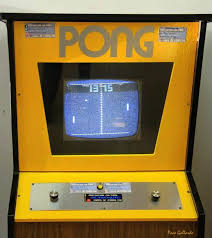
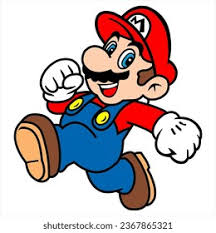

Curiosidades Gamer

El primer videojuego comercial fue Pong en 1972.- Pac-Man fue diseñado para atraer a las chicas al mundo gamer.

Mario originalmente se llamaba Jumpman. La industria de los videojuegos genera más dinero que el cine y la música juntos.
La industria de los videojuegos genera más dinero que el cine y la música juntos.